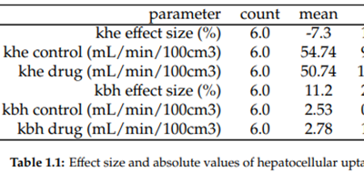
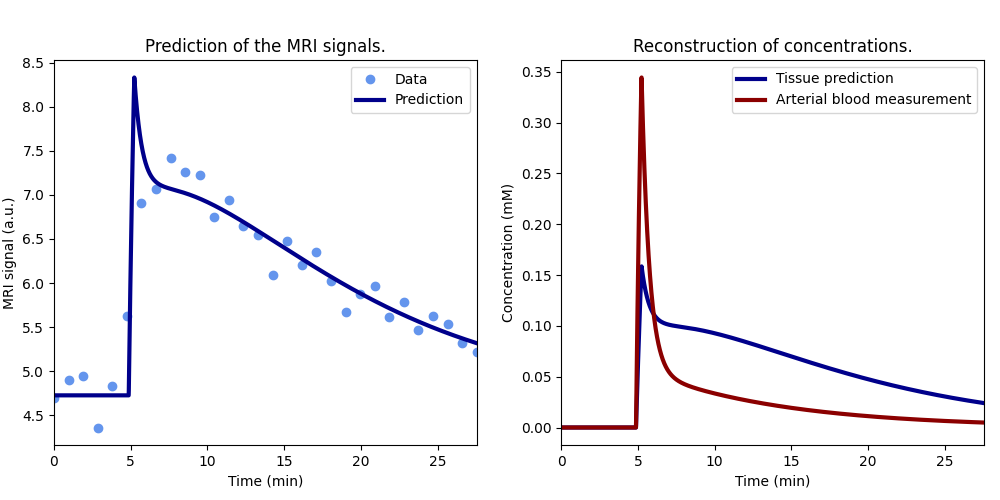
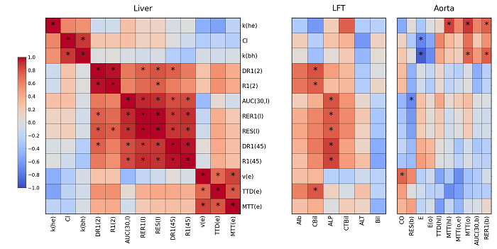
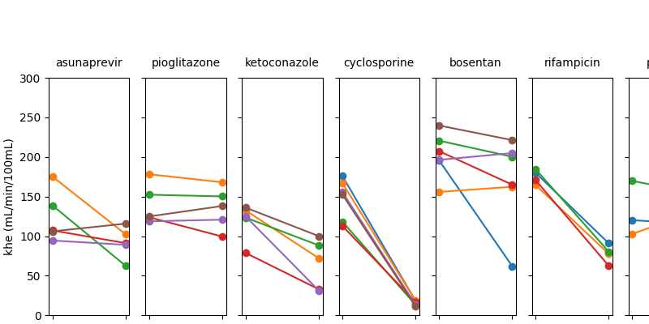

Pipelines#
Python scripts that turn imaging data into imaging biomarkers. Since imaging pipelines are complex and may take a long time to run, they are often split into smaller stages producing intermediate checkpoints.
Model training

Fat-water mapping from 3D Dixon-MRI
Pipeline for training the deep-learning model
Modelling

Drug-mediated liver transporter inhibition
MRI kinetic analysis (human assay)

Drug-mediated liver transporter inhibition
MRI kinetic analysis (rat assay)
Analysis

Drug-mediated liver transporter inhibition
Data analysis of the first-in-human study

Drug-mediated liver transporter inhibition
Data analysis of TRISTAN rat studies